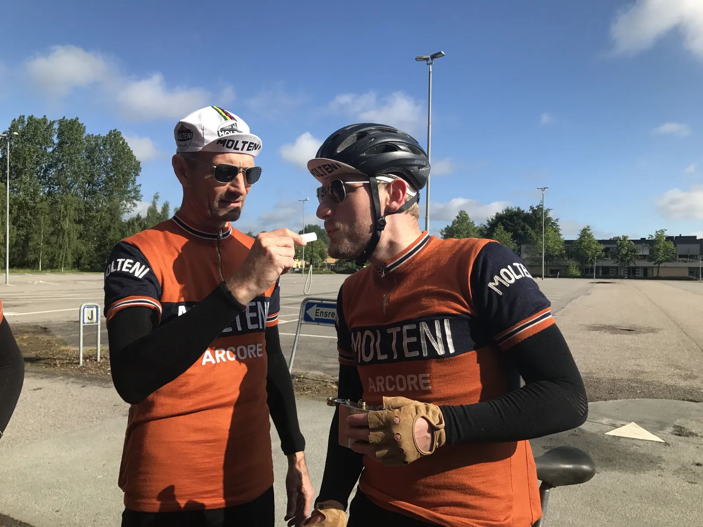

La Fleche Vejllonne, Event Day Kløver MotionsCykelløb og Ribe-Tønder-Ribe

Squadra Molteni har fuldt program i den kommende weekend. Lørdag køres forårsklassikeren La Fleche Vejllonne og søndag er der træningssamling, Event Day for Kløver MotionsCykelløb og Ribe-Tønder-Ribe.
Til La Fleche Vejllonne er Kaptajn Bjørnsteen, Løjtnant Kasper Sørensen og Carsten Jacobsen udtaget. Specielt Kasper Sørensen har vist en stejlt stigende formkurve henover det tidlige forår
Jeg har holdt Løjtnanten i kort snor, for eller topper han for hurtigt, fortæller Kaptajn Bjørnsteen, der ofte tester Løjtnanten med en håndholdt-puste-formkurvemåler.

Oprindeligt bestod holdet også af Eigil Leegaard, Claus Bech og Max Nielsen, med de er efter et lægetjek hos holdlæge Finn Birk blevet fritaget.
Med en næsten negativ fedtprocent, en hæmatokritværdi tæt på de 57, og den knivskarpe topform Eigil, Claus og Max har lige nu, måtte jeg simpelthen beordre dem en 14-dages pause, for at sikre, at de ikke kom i overtræning. Så jeg har sendt dem hjem på sofaen med en skrap diæt bestående af mørk belgisk øl og røde bøffer. Nå ja, det vil så sige, at Max har fået lov til at spise pølsemix fra den lokale grill, afslører holdlæge Finn Birk.
På søndag har Sqauadra Molteni et trippelt-program. Der er træningssamling og deltagelse i et optakt-event til Kløver MotionsCykelløb, der køres 4. september 2021, og som Squadra Molteni allerede har fået wildcard til.

Jeg har indkaldt 7 af holdets nøgleryttere til træningssamling på Den Jyske Højderyg, med henblik på at træne nogle nye strategier og angrebsformationer. Rytterne bliver fra morgenstunden sendt ud på godt 200 km i det bakkede landskab omkring Søhøjlandet. Først på eftermiddagen har jeg lovet, at holdet komme forbi Event Day for Kløver MotionsCykelløb, hvor vi skal deltage i en test af løbets karakteristiske sløjfer, fortæller sportsdirektør Klaus Maarup Kjærsgaard.
Træningssamlingen sluttes af med grillet pattegris og moltenipølser hos Molteni Alimentari’s jyske filial uden for Ry.
Og så er grus- og brostensekspert Jens Langergaard sendt til det nye Ribe-Tønder-Ribe, der køres gennem den barske sønderjyske marsk på små sogneveje, grus- og brostensveje.
Jeg er klar som aldrig før. Formen er god og jeg er klar til at sætte enhver carbon-rytter der nærmer sig, fortæller Jens, der har passet sin basistræning vinteren over, og allerede har over 3500 km på kontoen i år.